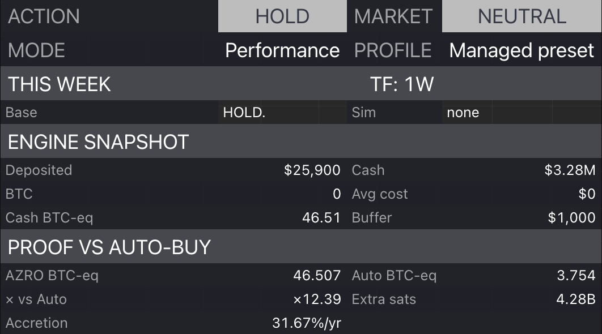

AZRO BTC-eq
46.507
Standardized example snapshot
Audit BTC-equivalent progress, x vs auto-buy, and extra sats directly on chart.
AZRO BTC-eq
Standardized example snapshot
Vs auto-buy
Relative BTC-eq progress
Governance
Most products sell confidence. This system shows its work against a simple auto-buy benchmark so you can verify whether the process is actually helping.

Standardized example snapshot
BTCUSD 1W • Jan 2017–Mar 2026 • $50/week contributions • $1,000 cash buffer • 0.10% fees • pre-tax. Backtests are hypothetical, sensitive to assumptions, and do not guarantee future performance.